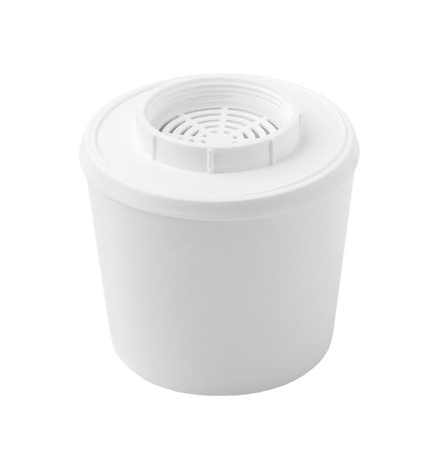

Очищающий воду фильтр для душа c
массажным эффектом
До конца акции осталось
Фильтр для душа «Водолей» является устройством, совмещающим функции душевой лейки и фильтра для
очистки и обработки
проходящей через него воды. Фильтр прикручивается к шлангу душевого смесителя вместо штатной душевой
лейки и остается в
таком положении постоянно.
Фильтр работает следующим образом. Вода из душевого шланга поступает в ручку фильтра, в которой
размещается
полипропиленовый картридж с хлорпоглащающими гранулами. Вода проходит внутрь картриджа, из которого
затем, проходя через
хлорпоглощающие гранулы и полипропиленовые стенки картриджа, выходит наружу. На этом этапе благодаря
хлорпоглащающим
гранулам и полипропилену высокой плотности осуществляется эффективное удаление хлора, а также очистка
от различных
механических примесей (песка, ила, ржавчины, осадка и т.п.). После ручки вода поступает в лейку, в
которой проходит
сквозь крошку природного минерала кремень, которая активизирует и регенерирует воду, превращая её в
кремневую воду,
имеющую уникальные бактерицидные свойства. После этого вода проходит через отверстия рассеивающей
пластины и выходит
наружу. На этом завершающем этапе благодаря сверхмалому диаметру и расположению отверстий рассеивающей
пластины
обеспечивается высокая скорость и мощность отдельных струек воды, что создает в итоге целый ряд
полезных эффектов
Фильтр обладает следующими свойствами:
— благодаря встроенному картриджу из полипропилена высокой плотности задерживает различные
механические примеси (песок,
ил, ржавчину, осадок и т.п.);
— находящиеся внутри картриджа хлоропоглощающие гранулы эффективно снижают содержание хлора, в
результате чего уменьшается его воздействие на кожу и слизистые человека;
— расположенный на выходе фильтра природный минерал
активизирует и регенерирует воду,
превращая её в кремневую
воду, имеющую уникальные свойства. Такая вода обладает повышенной бактерицидностью, поэтому её часто
используют для
полосканий, примочек, компрессов при диатезе, юношеских угрях, псориазе, ожогах. Если при умывании
вместо водопроводной
воды использовать кремневую, то вскоре можно заметить её благотворное влияние на кожу лица и состояние
волос (устранение
перхоти);
— благодаря сверхмалому диаметру отверстий рассеивающей пластины обеспечивается высокая скорость и
мощность струек воды,
что создает микромассажный эффект и снижает водопотребление на (20-40)%. Это позволяет принимать душ
даже при слабом или
пульсирующем напоре воды и одновременно экономить семейный бюджет.
Кроме того, сверхмалый диаметр, количество и специальное расположение отверстий рассеивающей
пластины обеспечивают эффективное объемное распыление и дробление струек воды на мельчайшие капли,
которые заряжают
окружающий их воздух отрицательно ().
Такая
ионизированная вода является биологически
активной, и поэтому
положительно влияет на организм человека;
— имеет красивый внешний вид и простую конструкцию, позволяющую легко подключать его к любому душевому
смесителю
Суть эффекта, открытого Нобелевским лауреатом Филиппом Ленардом,
заключается в том, что при интенсивном распылении воды,
то есть при образовании высокодисперсного водяного аэрозоля, микроскопические капельки воды
сообщают молекулам воздуха
отрицательный электрический заряд.
Отрицательные ионы (их часто называют «воздушными витаминами») являются биологически активными и
самым положительным
образом воздействуют на окислительно-восстановительные процессы в организме человека,
основные обменные процессы, тонус сосудов и функциональное состояние нервной системы.
Приём душа, использующего эффект Ленарда, оказывает
- энергостимулирующее действие
- улучшает сон
- повышает концентрацию внимания
- улучшает состояние организма при астме и других респираторных заболеваниях
- способствует предотвращению головной боли
- помогает снять напряжение при стрессе
- служит профилактике и терапии различных видов кожных заболеваний
- стимулирует кровообращение и улучшает состояние кожи и волос.
Кремень — природный минерал, основу которого составляет двуокись
кремния (SiО2). Благодаря уникальному
минерально-органическому составу является мощным биокатализатором, значительно ускоряющим
окислительно-восстановительные
реакции в воде, придавая ей полезные свойства.
Заметно улучшает органолептические свойства воды, приближая её к родниковой.
Обладает выраженным бактерицидным действием. Свои уникальные свойства кремневая вода проявляет при
наружном применении
в виде полосканий, примочек, компрессов при диатезе, юношеских угрях, псориазе, ожогах.
Если при умывании использовать кремневую, то вскоре можно заметить её благотворное влияние на кожу
лица и состояние
волос (устранение перхоти)
Следует отметить также и другие полезные свойства кремня. Полив кремневой водой улучшает рост
растений (рассады, цветов
и др.)
Кремневая вода используется при засолке овощей, т.к. долго не портится, не зацветает и делает овощи
хрустящими.
Рекомендуется готовить на кремневой воде компоты и маринады, заваривать кофе, чай и отвары из
трав.
Максимальный ресурс/срок работы на воде стандартного качества
при её доочистке от вторичного загрязнения: 3000 л/ 4 мес.
Тонкость механической фильтрации: 5 мкм
Температура фильтруемой воды: +5 … + 65 С
Габаритные размеры (высота х диаметр): (121,5х23,5) мм
Вес без упаковки: 17 г
Обычная цена: 3999 руб
Скидка 25%
Цена сегодня: 2899 руб
Характеристики
Давление воды на входе: (0,5 – 6) атм.
Присоединительный типоразмер: М20, наружная резьба
Габаритные размеры: (58 х 58 х 238) мм
Вес(без упаковки): 210 г
Максимальная производительность (напор воды): 5 л/мин
Максимальный ресурс/срок работы с одним картриджем на воде
стандартного качества при её доочистке от вторичного загрязнения: 3000 л / 4 мес.
Обычная цена: 4490 руб
Скидка 25%
Цена сегодня: 2990 руб
С этим товаром также покупают
Фильтр-кувшин «Водолей» предназначен для дополнительной очистки в домашних
условиях холодной водопроводной воды, при этом:
— задерживает различного рода механические примеси (песок, осадок, ржавчину и др.);
— устраняет неприятный запах и привкус воды, снижает цветность и мутность;
— очищает воду от тяжёлых металлов, хлорорганических соединений, радиоактивных
элементов, нефтепродуктов;
— уменьшает содержание солей жёсткости, в результате чего вода становится мягкой, что
особенно важно для людей с заболеваниями желудочно-кишечного тракта.
Использование такой воды уменьшает твёрдый осадок (накипь) в нагревательных
приборах;
— очищает воду от вредных примесей, сохраняя при этом необходимые организму
человека макро- и микроэлементы.
Для фильтра-кувшина «Водолей» выпускаются следующие типы картриджей:
— угольно-цеолитовый (базовый);
— шунгитовый;
— умягчающий;
— кварцевый.
Полное описание фильтра-кувшина приведено в его паспорте (см. ниже).
Состав: цеолит, активированный уголь с серебром
Скорость фильтрации (уменьшается в процессе эксплуатации): (0,2-0,9) л / мин
Максимальный ресурс / срок работы на воде стандартного
качества при её доочистке от вторичного загрязнения: 600 л / 4 мес.
Срок хранения до начала эксплуатации: 3 года
Габаритные размеры (высота х диаметр): (91х91) мм
Вес (без упаковки): 0.38 кг
Стоимость 550 руб
Состав: шунгит, активированный уголь с серебром
Скорость фильтрации (уменьшается в процессе эксплуатации): (0,2-0,9) л / мин
Максимальный ресурс / срок работы на воде стандартного
качества при её доочистке от вторичного загрязнения: 600 л / 4 мес.
Срок хранения до начала эксплуатации: 3 года
Габаритные размеры (высота х диаметр): (91х91) мм
Вес (без упаковки): 0.38 кг
Стоимость 650 руб
Состав: кремень, кварц, цеолит, активированный уголь с серебром
Скорость фильтрации (уменьшается в процессе эксплуатации)(0,2-0,9) л/мин
Максимальный ресурс/срок работы на воде стандартного
качества при её доочистке от вторичного загрязнения 600 л / 4 мес.
Срок хранения до начала эксплуатации 3 года
Габаритные размеры (высота х диаметр) (91х91) мм
Вес без упаковки 0,38 кг
Стоимость 700 руб
Состав: цеолит, ионообменная смола, активированный уголь с серебром
Скорость фильтрации (уменьшается в процессе эксплуатации)(0,2-0,9) л/мин
Максимальный ресурс/срок работы на воде стандартного
качества при её доочистке от вторичного загрязнения 500 л / 3 мес.
Срок хранения до начала эксплуатации 2 года
Габаритные размеры (высота х диаметр) (91х91) мм
Вес без упаковки 0,38 кг
Стоимость 750 руб
Характеристики
Объём воронки: 1,5 л
Объём очищенной воды: 1,5 л
Скорость фильтрации: (0,2-0,9) л/мин
Габаритные размеры: (285х140х295) мм
Вес: (без упаковки) 1,2 кг
Максимальный ресурс / срок работы с одним картриджем на воде стандартного
качества при её
доочистке от вторичного
загрязнения:
— для угольно-цеолитового, шунгитового, кварцевого картриджей 600 л / 4 мес.
— для умягчающего картриджа 500 л / 3 мес.
Цвета корпуса: синий, зелёный, красный, желтый, серый (см. фото).
Обычная цена: 2270 руб
Скидка 25%
Цена сегодня: 1800 руб
С этим товаром также покупают
Предприятие ООО «Сибирь-Цео» было создано в 1997 году с целью коммерческого внедрения результатов научных и практических исследований в области обработки и очистки питьевой воды. За эти годы предприятие превратилось в мощное научно-производственное и торгово-монтажное предприятие и заняло в своей области ведущее положение. Сегодня «Сибирь-Цео» – это предприятие, обладающее собственным офисными, производственными и складскими помещениями, имеющее необходимую материальную базу, экспериментальное производство, химическую лабораторию, автопарк. Наше предприятие сильно своим коллективом, в составе которого высококвалифицированные инженеры, рабочие, монтажники, снабженцы, финансисты, и др., имеющие большой опыт и многолетний стаж работы.
Рекомендую лейку тем, у кого сухая кожа головы. Мне лейка помогла сохранить волосы от выпадения. Волосы стали мягче. Фильтр лейки очень смягчает воду. Важно, что лейку можно становить без труда. Менять капсулы тоже можно без проблем. Я очень довольна!
Очень довольна , лейкой водолей , моешься и получаешь наслаждение от мягкой воды , как в облаке купаешься , волосы стали мягкие , кожа не сохнет , крема стала меньше наносить , так как кожа увлажненная. Очень важный момент , у меня светлые волосы и через два мытья головы после окрашивания цвет волос становился жёлтым , это ржавчина оставалась на волосах , сейчас цвет волос остаётся как при первом окрашивании . Я очень довольна и всем рекомендую
Я и так часами не выходила из ванной комнаты, так теперь с душем "Водолей" я вообще не хочу выходить! Кожа действительно стала чище и мягче, а благодаря массажному эффекту я так расслабляюсь, что потом сплю, как младенец. Самое то после напряженной работы, стресса и городской суеты. Посоветовала друзьям и теперь все пользуемся. Вы забудете обо всех плохих мыслях и проблемах с кожей, а как же удобно брать фильтр для душа с собой в путешествия и не бояться высыпаний на теле из-за непривычной воды в другой стране. В общем, для тех, кто следит за своим здоровьем - must have!
Товар получила в обещанный срок! Лейка очень гармонично вписалась в душевую,действительно подходит к любому типу душевых систем. Пользовалась леечкой 2,5 недели,ощущения вовремя принятия душа релаксирующие. Тон кожи выравнился и исчезли мелкие прыщечки,волосы стали мягче и легко расчесываются. Удобный сменный картридж,поменяла без труда. Рекомендую!
Очень переживала по поводу кожи лица ,ничего не помогало, ни крема ,ни сушители, зуд ничего не убирало , родители подарили лейку, стала пользоваться помимо того что через 10 дней я уже увидела другую кожу ,все стало проходить, даже пигмент уменьшился , я безмерно рада ,так же ощутимо мячик стала кожа в целом и лица и тела ,и кожа головы, волосы стали более шёлковыми ,а вода поступает таким потоком, что вылезать из душа неохото, расслабляет, как-будто под природным потоком , всем советую, кто хочет быть красивым и здоровым.
Если бы мне сказали, что обычный фильтр сможет изменить мою жизнь я бы посмеялась и не поверила. В связи с тем, что я часто переезжаю и путешествую, я часто сталкиваюсь с тем, что волосы становятся жёстче, на коже остаётся будто белый налёт, а прыщи на лице сразу говорят: «привет». Не многие страны могут похвастаться хорошей водой из водопровода, но этот фильтр просто спасение! Он очень легкий и компактный, а это значит, что не составляет никаких проблем положить его в чемодан или ручную кладь. Я жалею только об одном - что не взяла его раньше.
Адрес
630105, Новосибирск,
ул. Кропоткина, 108/1.
Для связи по телефону
{kind=link}
{kind=link}
{kind=link}
{kind=link}
{kind=link}
{kind=link}